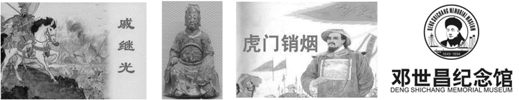
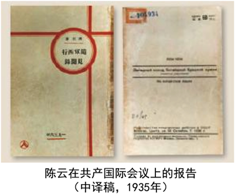

2026年北京丰台区九年级学业水平考试历史试题 · 选择题 第6、7、8、9、10题
6. 下表反映出清政府（ ）
顺治、康熙 | 册封达赖和班禅 |
雍正 | 设置驻藏大臣 |
乾隆 | 颁布《钦定藏内善后章程》 |
A. 废除了丞相制度B. 实行文化专制政策
C. 稳定了东北边疆D. 加强对西藏的管辖
7. 以下是一位同学在旅行时收集的“打卡纪念章”，这组纪念章反映的史事的主题是（ ）

A. 抗击外来侵略B. 推动思想解放C. 革新政治制度D. 发展民族实业
8. 下表是《申报》在1872年和1912年报头的纪年方式，导致这一变化的时代背景是（ ）
1872年4月30日报头标注 | ·帝王年号“大清同治” ·农历“壬申三月二十三日” |
1912年1月2日报头标注 | ·中华民国元月二日 ·辛亥十一月十四日 ·西历千九百十二年一月二号 |
A. 戊戌变法的实行B. 中华民国的建立
C. 新文化运动兴起D. 五四运动的开展
9. 一位同学在某会议纪念馆中发现下方报告，其主要内容有：“我们在这次会上纠正了第五次反围剿最后阶段与西征第一阶段中军事领导人的错误……我们推举毛泽东同志担任领导。”由此可见这次会议（ ）

A. 宣告中国共产党正式成立
B. 推动国共两党第一次合作
C. 确立了思想建党、政治建军的原则
D. 是中国共产党历史上生死攸关的转折点
10. 下表是1932年社会局统计的北平市各类车辆数量（单位：辆）。这反映出近代交通工具（ ）
类别 | 自行车 | 人力车 | 马车 | 汽车 | 摩托车 | 骡马大车 |
数量
| 64100 | 42900 | 300 | 2200 | 40 | 9400 |
A. 呈现出新旧并存的特征B. 受到新式教育发展的影响
C. 体现出自由平等的风尚D. 变化首先出现在沿海地区